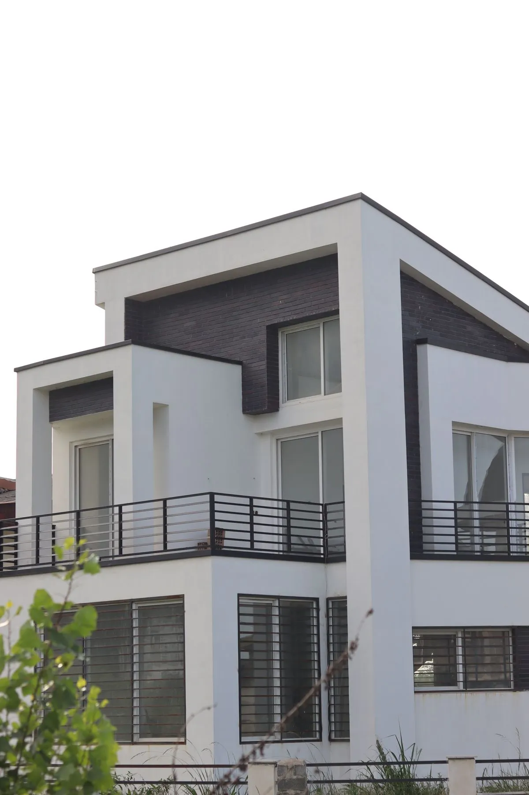
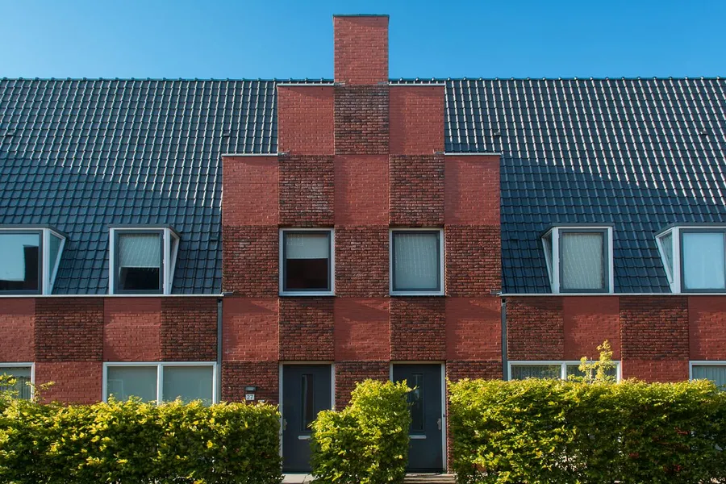
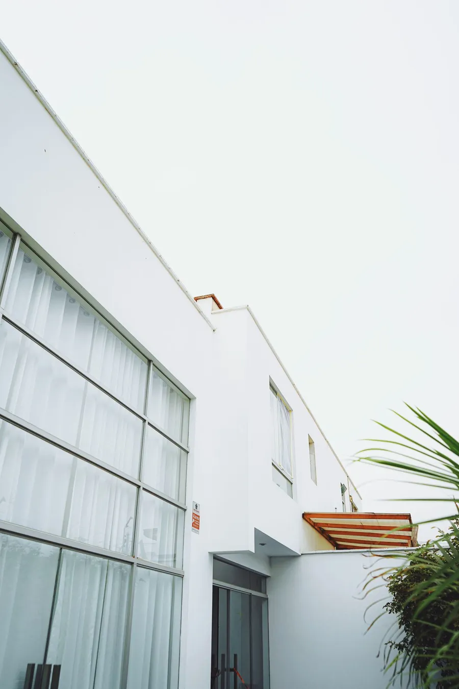

Architecture · Edinburgh · Since 2011
Buildings that listen to their place.
We design quiet, low-carbon homes, schools and civic buildings with a small team, a big pencil and a lot of patience.
Selected work
Recent projects

Birch Court Primary School
A school arranged around a courtyard where classrooms spill outdoors.

House on the Skerry
A family house that turns its back on the wind and opens its heart to the sea.
Ullapool Library & Archive
A civic library whose reading room hangs over the harbour.

The Hollow Tower
A twelve-storey office with a garden at its core.



How we work
Three beliefs. Every project.
Start with the site
Weather, light, ground and neighbours decide the building. We spend more time looking than drawing.
Carbon is a design brief
Natural materials, thick walls and honest detailing. Our buildings use about a quarter of the energy of a typical new one.
Make it last
Repairable, adaptable and loved. A building that is still wanted in a hundred years is the most sustainable one.
Journal
What we’re thinking about
- Process
Why we still draw by hand first
Before any software opens, every project starts with a pencil. Here is why that slow first hour pays for itself.
- Materials
Building with timber: five lessons from five projects
Cross-laminated timber is not a magic material. It is a very good one, if you respect it. Here is what five projects taught us.
- Education
Designing a school that teaches itself
Birch Court was designed around a simple idea: a building can be a teacher. This is how that idea shaped the plan.
Got a site, a brief or just a feeling?
The first conversation is free. Bring a photo of the plot and a list of what matters.